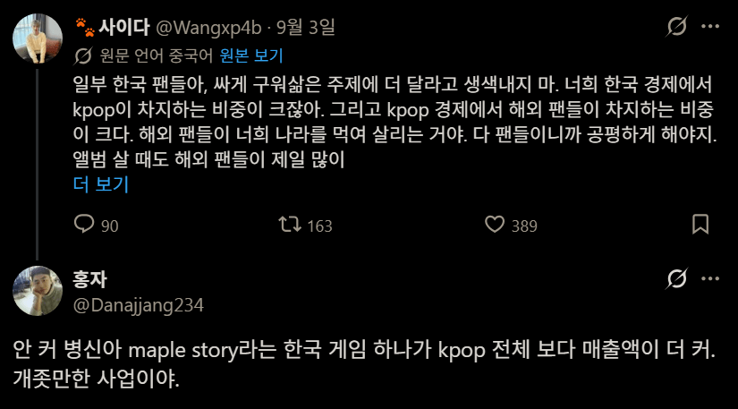
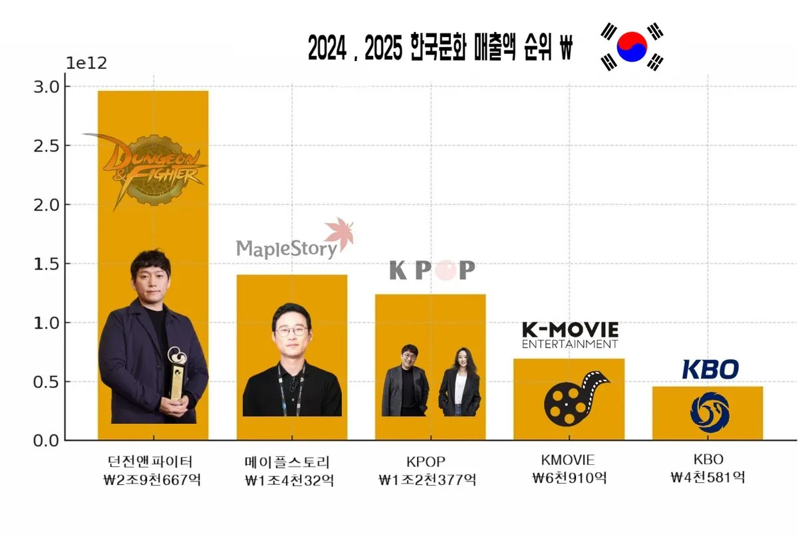

Kpop이 우리나라 문화 수출 주력 상품인줄 앎.


Kpop이 우리나라 문화 수출 주력 상품인줄 앎.



크보가 해외에서 어떻게 소비가 될수가 있는거지..?
그냥 매출표 세워놓은거임
옛날부터 게임이 압도적으로 돈되는 사업이었음. 예전에도 이런 게시물 올라오니까 kpop 조아하는분들 충격받더라. 게임이 저렇게 돈 마니 버냐면서. 하긴. 관심이 없으니 모를수도 있지
게임이 종합 엔터테이먼트라 엄청 컸는데 높으신 분들이 다 죽여버림 ㅋㅋ
아무래도 게임에서의 개돼지 조련술이 더 강할수밖에..
인간을 한낱 짐승으로 끌어내리는것을
kpop데몬헌터스가 우리나라가만든거면 쫌 비벼볼만햇을텐데
자주 말하지만
넥슨이 한국 주 상폐하고 괜히 일본으로 튄게아님
ㅋㅋㅋ
근대 사실 도망친곳에 낙원없다고
미국으로 튀었어야했는대
도망은 잘쳤는데
슬슬 미국으로 또 튀어야하지 않겠나 싶더라... 이제 pc충들도 죽었는데
자존감을 저런데서 찾으니 얼마나 볼것없는 사람들인지
단순 직접매출로 비교하는게 의미가있나. 케이팝이으로 인해전세계에 파급력이랑 부가가치 창출, 국가인식, 관광 등 다른 분야에 미치는 영향력이 압도적인데 그런건 계산하기도 힘든거고 저 매출표만 보고 비교하는건 아무의미도없음.
아니 개붕아 kpop이 한국 경제를 먹여살리고 해외 팬들이 존만한 앨범 구매 가격, 공연 티켓비로 한국을 먹여살린다잖아 ㅋㅋㅋ
뭔 딴소리를 하고있어 kpop 위상이 이렇게 크지 않았던 2010년도엔 동남아 수준의 삶을 살고 있었니?
저 X똥글이랑 별개로 케이팝을 직접매출로만 통계내서 매던이 케이팝보다 더 큰사업이다라고 얘기하기엔 잘못된 주장이라고 똘빡아 문화산업이라는게 단순매출로만 비교할수있는 영역이 아니라고. 말귀못알아듣니?
근데 본문의 주된 쟁점은 kpop 산업이 한국경제에서 차지하는 비중이 크냐 아니냐라는 거 잖아. 여기에 문화산업의 특수성을 들고 나오는건 별 의미 없는 이야기 아닌가?
ㅋㅋ 그 문화 산업을 매출로 표현할때 뭐 귀에걸면 귀걸이 코에걸면 코걸이 지 좆대로 공연 한번에 파급 효과 몇백조 이지랄하는데 퍽이나
파급력 부가가치 그런 상상속의 수치는 의미가 없는게 김연아 백조녀 천조녀 타령하던 시기도 있었지만 별거 없었지
주제랑 하등 관계없는 딴소리 해놓고 자기말이 옳다 ㅋㅋ 어쩌라고?
뭔 좆같은 소리임
그냥 글 내용이 매출따지고있는대
지가 딴소리해놓고 남 욕하는건 뭔 개지랄좆같은 심보임
-던- -메-
소프트파워라는걸 모르나 단순 매출 비교로 하면 던메리니지가 고티게임 다 바르는거 아려나
근데 K게임은 이미 이미지 좆망했지 가챠로
하이브 매출만 24년도에 2조가 넘는데 저게 말이 되는 통계임?
찾아보니까 게임이 두배 정도 매출액 크긴 한데 메이플 하나에 비비는건 걍 주작이네
예전에 댓글에 넥슨 = 엔터상위3개매출 이라고 해서 찾아봤는데 사실이였슴
영업익으로 가니까 엔터산업으로 넘어가야 넥슨1개에 비빔
매출영업익으로 보면 게임산업이 진짜 규모크긴함
근데 경쟁의 영역이 아니라서 굳이 비교할 필요가 없잖아?? 갈드컵 비교하는 애들말곤 관심도 없을걸?
하이브매출로해버리면 좀 다른것도 섞여서그럼. 집계때 간접은 구분해서 공시하는데 그기준이면 비빌거임. 간접의경우 위버스나 미국래이블등도있어서..
https://www.index.go.kr/unity/potal/main/EachDtlPageDetail.do?idx_cd=2752
매출액 차이가 나긴 하는데 메 하나에 밀릴 정도는 아닌듯
아 전체기준이면 아닌거맞음.. 숫자보면 저거 메이플 매출이랑 하이브 직접매출같던데
사실 문화 산업은 자체 매출보다
식품 화장품 패션 관광...
타분야에 기여하는 바가 존나 큰데
간은 문화산업이라도
게임, 미술, 클래식 음악... 이런건 국제적 보편성이
좀 강하다보니 한국에 대한 호감도를 올리기엔
쉽지 않은 편이고
대중음악이나 영화 TV프로그램
이런게 효과가 존나크지
대외 인지도나 부가가치 창출은 kpop이 훨씬 높지 ㅋㅋㅋ 게임은 순수하게 사업아이템으로서 매출이 잘 나오는거고...
사실 뭐 게임은 순수 매출액이 ㅈㄴ 높은거고
케이팝은 소프트 파워로 이미지 개선이나 문화 친밀감 주는거라 큰거긴 한데
솔직히 게임도 ㅈㄴ 쩌는거고
케이팝도 ㅈㄴ 쩌는게 맞음
게임에 케데헌 오겜만큼 성과거둔 컨텐츠가 있었나
반도체를 아직 모르시는구나
케이팝이 음원 매출은 얼마 안돼도
부수적인 산업(화장품, 식품 등)이 존나 많이 달린듯
안보이는 규모가 10배쯤 되지 않을까?
트위터 외국 k팝 팬들이 "우리가 한국 경제를 먹여살린다 외국 k팝 팬들한테 잘해라 , 우리가 불매하면 한국망한다" 뭐 이딴 똥글 올려서 시작된걸오 알고이씀 , 반박시 니말 마즘
한국경제에서 kpop이 ㅋㅋㅋㅋㅋㅋㅋㅋㅋㅋㅋㅋ시발
HBM도 못만드는 놈이 헛소리 하고 있어
똥글에 긁혀서 게임으로 케이팝 내려치기 하는것도 존나 한심
저게 k팝이 아니라 반도체라면 납득했겠지만 한국 경제에서 절대적인 영향력을 행사하는 삼성이라는 재벌그룹이 있는데 저런착각을 할 수 있지? 동남아는 삼성을 모를수가 없을텐데
케이팝의 모든 파이를 다 끌어와도 우리나라 경제의 0.3~0.5퍼센트의 규모라던데
뭘 싸게 구워삶았다는거지? 그리고 뭘 더달라고 한거고?
던파좀 살려내라 진짜 내 최애겜인데 일케 망햐버린게 넘 안타깝다
던파는 저 돈 처먹고도 일안해서 좆망한거냐 ㅋㅋㅋ
다 개좆밥 만들어버리는 킹도체 ㅋㅋㅋㅋ
문화 파급력이 크긴한데 그거 다 합쳐도 경제효과가 미디어에서 띄워주는 정도일지는 모르겠어
취준할 때 보면 누구나 다 아는 대표 식품 기업은 중견기업인데
살면서 처음 듣는 B2B 기업이 매출 10조짜리고 이런 곳 엄청 많아서 놀라는 느낌?